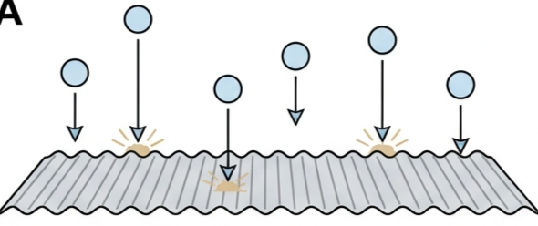
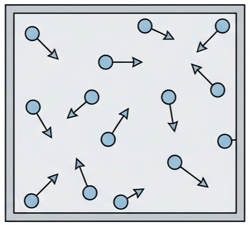
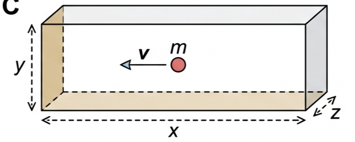
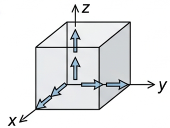
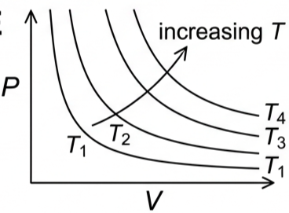
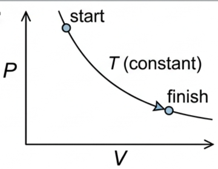
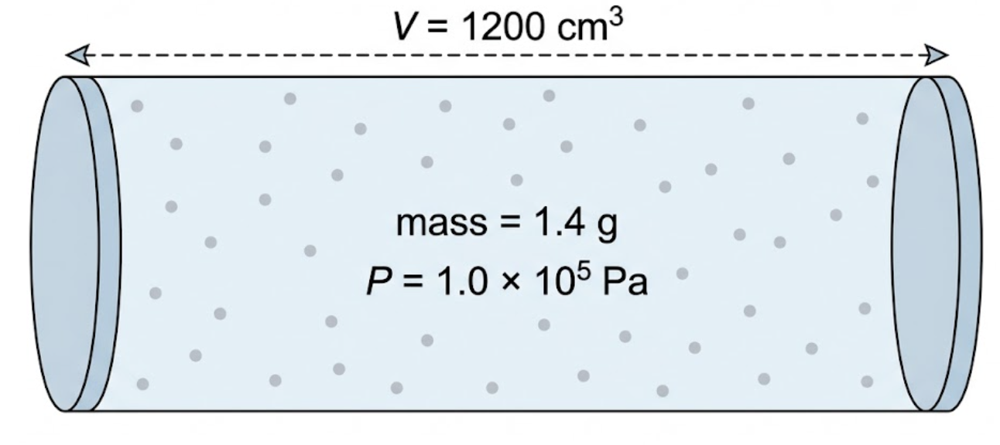

🎯 Hook – pressure is just a lot of tiny impacts
Stand under a tin roof in a hailstorm. Each hailstone delivers one sharp, separate impact — but with thousands landing every second, the roof doesn't feel individual hits, it feels a steady push. That steady push is exactly what gas pressure is: not a continuous force, but the statistical average of an enormous number of individual particle collisions with a surface, each one lasting a fraction of a microsecond. Zoom in far enough on any "smooth" gas pressure and you find nothing but collisions.

🧪 What makes a gas "ideal"?
An ideal gas is a gas which obeys the ideal gas law, \(PV = nRT\), perfectly. No real gas does this exactly, but most real gases come close enough that the model is extremely useful. Although most gases are molecular, physicists often say particles to keep the model general. The microscopic model makes seven specific assumptions:
- The gas contains a very large number of identical particles.
- The volume of the particles themselves is negligible compared with the total volume occupied by the gas.
- The particles move in random directions, with a wide variety of speeds.
- There are no forces between particles, except during a collision.
- Because there are no forces, particles have no (electrical) potential energy — any change in internal energy of an ideal gas is assumed to be entirely a change in random kinetic energy.
- The motion of the particles obeys Newton's laws of motion.
- All collisions between particles are elastic — the total kinetic energy of the particles stays constant at constant temperature.

📐 One particle, one wall: building the model
Start with just one particle, mass \(m\), moving with velocity \(v\) perpendicular to the end wall of a rectangular box of dimensions \(x\), \(y\), \(z\). After an elastic collision with the wall it returns along the same path with velocity \(-v\).
The particle only strikes this wall again after travelling to the opposite wall and back, a distance \(2x\):
where \(V = xyz\) is the total volume of the box.

🌐 From one particle to a real gas
Real containers are rarely rectangular, and a real gas has a huge number of particles \(N\), moving in random directions with different speeds, not all charging perpendicularly at one wall. Building the model up in stages:
Step 1 — many particles, still all perpendicular: if there are \(N\) particles in the box, all moving perpendicular to the end wall, the pressure on that wall becomes \(\dfrac{Nmv^2}{V}\).
Step 2 — random directions: particles actually move in three dimensions, so on average only \(\tfrac13\) of the total is directed along any one of the three perpendicular directions:
Step 3 — a spread of speeds: if the particles have different speeds, \(v^2\) here means the average value of their speeds-squared.
Step 4 — any shape of container: it can be shown that the shape of the container does not affect the pressure — only its volume matters.
Since \(Nm\) is the total mass of the gas, \(\dfrac{Nm}{V}\) is its density, \(\rho\), giving the compact form used throughout this topic:

📊 Reading isotherms on a PV diagram
A gas's behaviour is often plotted as pressure against volume at a series of fixed temperatures — each curve is called an isotherm. Because \(PV = nRT\), for a fixed amount of gas a higher temperature means a larger value of \(PV\), so the whole curve sits further from the origin.
| Graph type | Axes (X, Y) | Shape | What to read |
|---|---|---|---|
| Single isotherm | Volume · Pressure | Smooth curve falling from upper-left to lower-right (a hyperbola) | Every point on one curve is at the same temperature; \(PV\) is constant along it |
| Family of isotherms | Volume · Pressure | Several curves of the same shape, fanning outward from the origin | The curve further from the origin — higher \(P\) at the same \(V\), or larger \(V\) at the same \(P\) — is the higher temperature |
| A change of state | Volume · Pressure | A line or arrow joining a starting point to a finishing point, possibly crossing between isotherms | Whether the point moves to a higher or lower isotherm tells you whether \(T\) rose, fell, or stayed the same |


✍️ Worked example – nitrogen in a container
Determine (a) a value for the average speed of nitrogen molecules at normal air pressure (\(1.0\times10^{5}\ \text{Pa}\)) if a mass of 1.4 g of the gas was in a container of volume 1200 cm³; (b) how many moles of nitrogen were in the container; (c) the temperature of the gas; (d) a value for the average molecular speed if the temperature rose to 350 K in the same container.
(b) \(n = \dfrac{1.4}{28} = 0.050\ \text{mol}\)
(c) \((1.0\times10^{5})(1200\times10^{-6}) = 0.050\times8.31\times T\), so \(T = 289\ \text{K}\)
(d) \(\dfrac{1.0\times10^{5}}{289} = \dfrac{P_2}{350}\), so \(P_2 = 1.21\times10^{5}\ \text{Pa}\); then \(1.21\times10^{5} = \tfrac13\times1.17\times v^2\) (density unchanged) gives \(v = 560\ \text{m s}^{-1}\).

🌍 Real-world skill: mean and range
"Average particle speed" gets used constantly in this topic, so it's worth being precise about it. Consider timing a ball rolling down a slope: 15, 12, 11, 21, 14, 11, 14, 13 s. The range (data) is the spread from smallest to largest value — here 11 to 21 s. The value 21 s looks anomalous, inconsistent with the rest of the set, and could be called an outlier — it may be a mistake and should be excluded unless checked and confirmed.
An average value is any single number chosen to represent a set of values — the median (13), the most common value (11 or 14), or, most often in physics, the mean: add all the values and divide by how many there are. Here the mean is 12.9 s, better quoted to 2 s.f. as 13 s.
🚀 HL extension – checking the equation with units
A quick unit check catches obvious algebra slips. Pressure is in pascal, equivalent to \(\text{N m}^{-2}\), and \(\text{N} \equiv \text{kg m s}^{-2}\), so pressure reduces to \(\text{kg m}^{-1}\,\text{s}^{-2}\) in SI base units. On the right of \(P=\tfrac13\rho v^2\): \(\tfrac13\) has no units, \(\rho\) has units \(\text{kg m}^{-3}\), and \(v^2\) has units \(\text{m}^2\,\text{s}^{-2}\); multiplying gives \(\text{kg m}^{-1}\,\text{s}^{-2}\) — matching the left side.
Challenge: show that \(P=\tfrac13 Nm\,v^2/V\) also reduces to the same base units. Answer: \(N\) is a pure number; \(m\) in kg; \(v^2\) in \(\text{m}^2\,\text{s}^{-2}\); \(V\) in m³. Combining: \(\text{kg}\cdot\text{m}^2\,\text{s}^{-2}/\text{m}^3 = \text{kg m}^{-1}\,\text{s}^{-2}\), the same as before — as it must be, since \(Nm/V\) is just \(\rho\).
⚠️ Trap corner – common mistakes
| Misconception | Correct view |
|---|---|
| Collisions between gas particles gradually lose kinetic energy, like real macroscopic collisions | Ideal-gas collisions are assumed elastic — total kinetic energy stays constant at constant temperature, or the gas would keep cooling |
| \(V\) and \(v\) in \(P=\tfrac13Nmv^2/V\) are interchangeable — they're both "V" | Upper-case \(V\) is volume; lower-case \(v\) is speed. Easy to confuse, and worth writing out in full the first time you use the equation |
| The derivation only works for a cubic or rectangular container | It can be shown that the shape of the container does not affect the result — only the volume does |
| The "average speed" and the speed you get from \(P=\tfrac13\rho v^2\) are the same number | The equation gives \(\sqrt{\overline{v^2}}\) (the root-mean-square speed), which is not exactly equal to the mean speed, \(\bar v\) |
Complete the statements:
✓ (b) \(\rho = 2.0\times10^{-4}\ \text{g cm}^{-3} = 0.20\ \text{kg m}^{-3}\); \(m=\rho V \approx 0.20\times1.4\times10^{-2} \approx 2.8\times10^{-3}\ \text{kg}\ (2.8\ \text{g})\).
✓ (c) Molar mass of He \(=4\ \text{g mol}^{-1}\): \(n = 2.8/4 \approx 0.71\ \text{mol}\).
✓ (d) \(N = nN_{\text A} \approx 0.71\times6.02\times10^{23} \approx 4.3\times10^{23}\ \text{atoms}\).
✓ Any reasonable balloon diameter is acceptable — this is an estimation question, so the method matters more than the exact assumed size.
✓ \(n = \dfrac{(1.5\times10^{6})(120\times10^{-6})}{8.31\times300} = \dfrac{180}{2493}\).
✓ \(n \approx 0.072\ \text{mol}\).
✓ This follows because \(PV=nRT\) — for the same fixed amount of gas, a larger value of the product \(PV\) can only mean a larger \(T\), so the higher-temperature isotherm sits further from the origin.
✓ If X lies on the same isotherm as S, only \(P\) and \(V\) change (in opposite senses) and \(T\) is constant; if X lies on a different isotherm, \(T\) has also changed — higher isotherm means a temperature increase, lower isotherm a decrease.
✓ State explicitly which of \(P\), \(V\) and \(T\) increased, decreased, or stayed the same, based on the actual positions of S and X on the given diagram.
✓ (b) A curve moving left along a single isotherm — volume decreases, pressure increases, temperature unchanged.
✓ (c) A line moving down and to the left, from a point on a higher isotherm to a point on a lower isotherm — both \(P\) and \(V\) fall as \(T\) falls.
✓ Newton's second law as rate of change of momentum, \(F=\Delta p/\Delta t\), to find the average force from repeated collisions.
✓ Simple geometry (distance \(=2x\), speed \(v\)) to find the time between successive collisions with the same wall.
✓ The definition of pressure, \(P=F/\text{area}\), and of density, \(\rho=Nm/V\); plus the statistical step of splitting random 3-D motion into three equal perpendicular components (giving the factor \(\tfrac13\)) and using the average of \(v^2\) for a spread of particle speeds.
✓ \(P = \dfrac13\times\dfrac{(2.65\times10^{-2})\times500^2}{0.010}\).
✓ \(P \approx 2.2\times10^{5}\ \text{Pa}\).
✓ \(v^2 \approx 1.9\times10^{5}\ \text{m}^2\,\text{s}^{-2}\).
✓ \(v \approx 4.3\times10^{2}\ \text{m s}^{-1}\).
✓ \(P \approx 1.1\times10^{5}\ \text{Pa}\).
✓ (b) \(\bar v^2 = 480^2 = 2.30\times10^{5}\ \text{m}^2\,\text{s}^{-2}\).
✓ (c) \(\overline{v^2} = \dfrac{440^2+480^2+520^2}{3} = 2.31\times10^{5}\ \text{m}^2\,\text{s}^{-2}\).
✓ (d) \(\sqrt{\overline{v^2}} \approx 481\ \text{m s}^{-1}\) — slightly greater than the mean speed in (a), which is why \(P=\tfrac13\rho v^2\) uses the root-mean-square speed, not the plain mean.